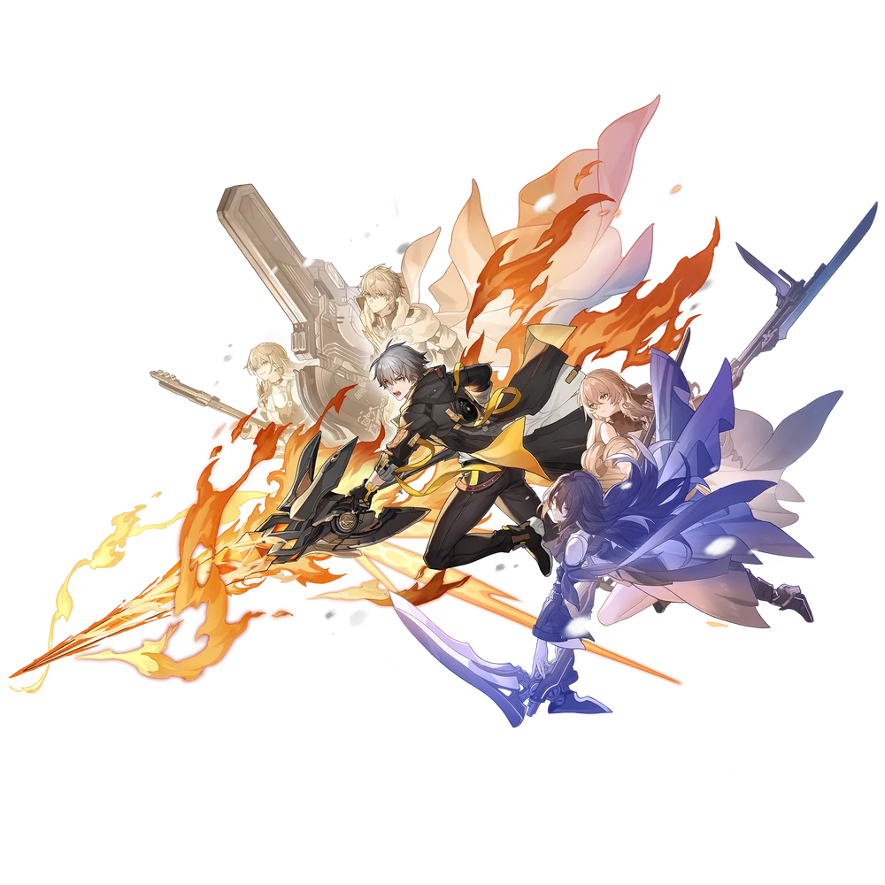
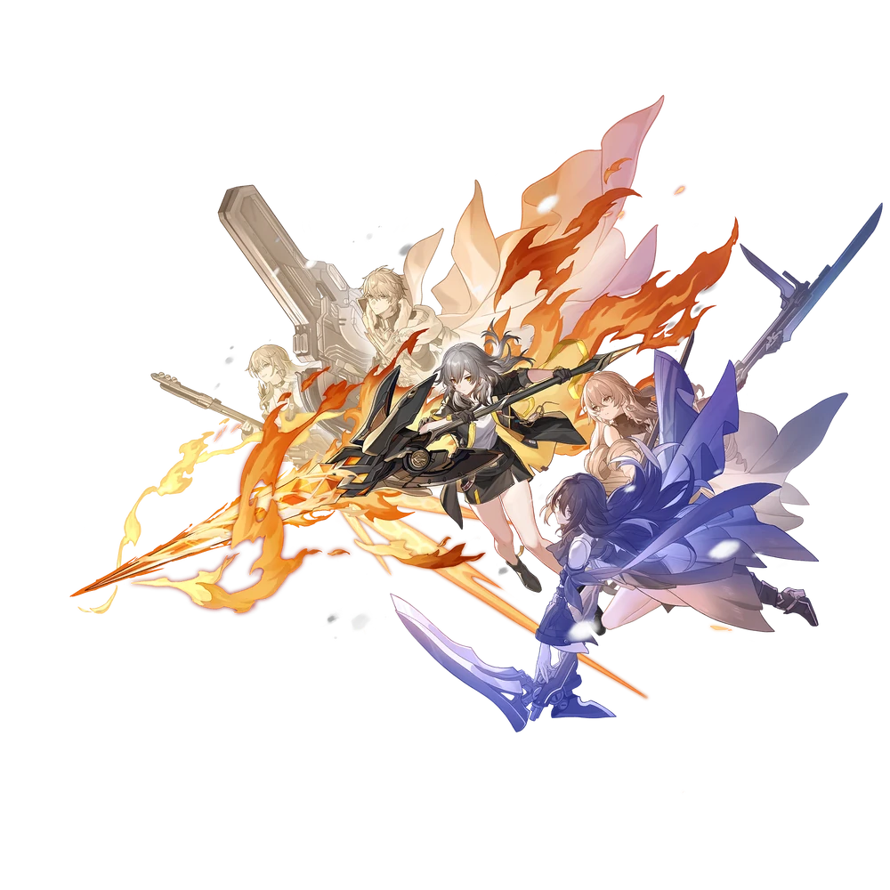

| Nome | Caelus/Stelle |
|---|---|
| Elemento | Adaptativo | Raridade | ✦ ✦ ✦ ✦ ✦ |
| Caminho | Adaptativo |
| Sexo | Homem/Fêmea |
| Especie | ??? |
| Facção | Expresso Astral O sem-nome | Mundo | Expresso Astral | Como obter | Obtido por padrão | Data de Lançamento | 2023-04-26 | Adicionado pela primeira vez | Versão 0.6.0 |
A Destruição
Ascensões e estatísticas
| Fase de Ascensão | Level | Base HP | Base ATK | Base DEF | Base SPD |
|---|---|---|---|---|---|
| 0✦ | 1/20 | 163 | 84 | 62 | 100 |
| 20/20 | 319 | 164 | 122 | 100 | |
| 1✦ | 20/30 | 384 | 198 | 147 | 100 |
| 30/30 | 466 | 240 | 178 | 100 | |
| 2✦ | 30/40 | 531 | 274 | 203 | 100 |
| 40/40 | 613 | 316 | 235 | 100 | |
| 3✦ | 40/50 | 679 | 350 | 260 | 100 |
| 50/50 | 761 | 392 | 291 | 100 | |
| 4✦ | 50/60 | 826 | 426 | 316 | 100 |
| 60/60 | 908 | 468 | 347 | 100 | |
| 5✦ | 60/70 | 973 | 502 | 373 | 100 |
| 70/70 | 1,055 | 544 | 404 | 100 | |
| 6✦ | 70/80 | 1,121 | 578 | 429 | 100 |
| 80/80 | 1,203 | 620 | 460 | 100 |
| Nível | Custo de Evolução | Materiais de Ascensão do Personagem | Materiais Necessários |
|---|---|---|---|
| 0 → 1 ✦ |  4,000 4,000 |
 5 5 |
|
| 1 → 2 ✦ | 8,000 |
10 |
|
| 2 → 3 ✦ | 16,000 |
4 |  6 6 |
| 3 → 4 ✦ | 40,000 |
6 | 9 |
| 4 → 5 ✦ | 80,000 |
8 | |
| 5 → 6 ✦ | 160,000 |
10 |
Habilidades de combate
| Icone | Tipo | Nome | Descrição | Marcação | Energia | Resistência DMG |
|---|---|---|---|---|---|---|
| ATK básico | hit de despedida | Causa DANO Físico igual a 50%–130% do ATK do Trailblazer a um único inimigo. | Alvo único | Geração: 20 | 30 | |
| Skill | Descanse em paz | Causa DANO Físico igual a 62,5%–156,25% do ATK do Trailblazer a um único inimigo e inimigos adjacentes a ele. | Explosão | Geração: 30 | 60 (Principal) 30 (Adjacente) | |
| Ultimate | Stardust Ace | Escolha entre dois modos de ataque para desferir um golpe completo. Blowout: Farewell Hit causa DANO Físico igual a 300%–525% do ATK do Trailblazer a um único inimigo. Blowout: RIP Home Run causa DANO Físico igual a 180%–315% do ATK do Trailblazer a um único inimigo, e DMG Físico igual a 108%–189% do ATK do Trailblazer aos inimigos adjacentes a ele. | Melhorar | Custo: 120 Geração: 5 | 90 (Alvo Único) 60 (Explosão) | |
| Talento | Escolha perfeita | Cada vez que esse personagem inflige Fraqueza em um inimigo, o ATK aumenta em 10%–25% . Este efeito acumula até 2 vez(es). | Melhorar | |||
| Técnica | Terceiro Golpe Imortal | Cura imediatamente todos os aliados em 15% de seus respectivos Max HP após usar esta técnica. | Restaurar |
Eidolons
| Icone | Nome da habilidade | Nivel | Descrição |
|---|---|---|---|
| Uma Estrela Cadente | 1 | Quando os inimigos são derrotados devido ao Trailblazer's Ultimate, o Trailblazer regenera 10 energias extras. Este efeito só pode ser ativado uma vez por ataque. | |
| Um Anfitrião Relutante | 2 | Atacar inimigos com Fraqueza Física restaura o HP do Trailblazer igual a 5% do ATK do Trailblazer. | |
| Um Sussurro Principal | 3 | Atacar inimigos com Fraqueza Física restaura o HP do Trailblazer igual a 5% do ATK do Trailblazer. | |
| Um Olhar Destruidor | 4 | Ao atacar um inimigo com quebra de fraqueza, a taxa CRIT aumenta em 25%. | |
| Uma esperança sobrevivente | 5 | Nível final +2, até um máximo de Lv. 15. ATK Básico Lv. +1, até um máximo de Lv. 10. | |
| Uma vontade pioneira | 6 | O talento do Trailblazer também é acionado quando eles derrotam um inimigo. |
Traços
| Custo Total (1 → 6 para rastreamento de ATK básico) | ||||||
|---|---|---|---|---|---|---|
| 192.000 |
4 |
5 |
 5 5 |
 2 2 |
 6 6 |
 8 8 |
| Custo total (1 → 10 para um rastreamento) | ||||||||
|---|---|---|---|---|---|---|---|---|
| 522.000 |
6 |
10 |
5 |
2 |
12 |
23 |
.webp) 3 3 |
 1 1 |
A Preservação


Ascensões e estatísticas
| Fase de Ascensão | Level | Base HP | Base ATK | Base DEF | Base SPD |
|---|---|---|---|---|---|
| 0✦ | 1/20 | 168 | 81 | 82 | 100 |
| 20/20 | 329 | 159 | 160 | 100 | |
| 1✦ | 20/30 | 397 | 192 | 193 | 100 |
| 30/30 | 481 | 233 | 235 | 100 | |
| 2✦ | 30/40 | 549 | 265 | 268 | 100 |
| 40/40 | 633 | 306 | 309 | 100 | |
| 3✦ | 40/50 | 701 | 339 | 342 | 100 |
| 50/50 | 785 | 380 | 383 | 100 | |
| 4✦ | 50/60 | 853 | 413 | 416 | 100 |
| 60/60 | 937 | 454 | 457 | 100 | |
| 5✦ | 60/70 | 1.005 | 486 | 490 | 100 |
| 70/70 | 1.089 | 527 | 532 | 100 | |
| 6✦ | 70/80 | 1.157 | 560 | 565 | 100 |
| 80/80 | 1.241 | 601 | 606 | 100 |
| Nível | Custo de Evolução | Materiais de Ascensão do Personagem | Materiais Necessários |
|---|---|---|---|
| 0 → 1 ✦ | 4,000 |
5 |
|
| 1 → 2 ✦ | 8,000 |
10 |
|
| 2 → 3 ✦ | 16,000 |
4 | 6 |
| 3 → 4 ✦ | 40,000 |
6 | 9 |
| 4 → 5 ✦ | 80,000 |
8 | |
| 5 → 6 ✦ | 160,000 |
10 |
Habilidades de combate
| Icone | Tipo | Nome | Descrição | Marcação | Energia | Resistência DMG |
|---|---|---|---|---|---|---|
| ATK básico | Luz Quebra-Gelo | Causa Fire DMG igual a 50%–130% do ATK do Trailblazer para um único inimigo e ganha 1 pilha de Magma Will. | Alvo único | Geração: 20 | 30 | |
| ATK básico | Luz Quebra-Gelo | Consome 4 pilhas de Vontade de Magma para aprimorar o ATK básico, causando Fire DMG igual a 90%–168,75% do ATK do Trailblazer a um único inimigo e Fire DMG igual a 36%–67,5% do ATK do Trailblazer aos inimigos adjacentes a ele. | Explosão | Geração: 20 | 60 (Principal) 30 (Adjacente) | |
| Skill | Âmbar Eterno | Aumenta a redução de DMG do Trailblazer em 40%–55% e ganha 1 acúmulo de Magma Will, com 100% de chance base de Provocar todos os inimigos por 1 turno(s). | Defesa | Geração: 30 | ||
| Ultimate | Lança Flamejante de Guerra | Causa Fire DMG igual a 50%–125% do ATK do Trailblazer mais 75%–187,5% da DEF do Trailblazer a todos os inimigos. O próximo ATK básico será aprimorado automaticamente e não custará Magma Will. | AoE | Custo: 120 Geração: 5 | ||
| Talento | Tesouro dos Arquitetos | Cada vez que o Trailblazer é atingido, ele ganha 1 stack de Magma Will para um máximo de 8 stack(s).
Quando Magma Will não tem menos de 4 acúmulos, o ATK básico do Trailblazer é aprimorado, causando DANO a um único inimigo e inimigos adjacentes a ele. Quando o Trailblazer usa Basic ATK, Skill ou Ultimate, aplique um Shield a todos os aliados que absorve DMG igual a 4%–7% da DEF do Trailblazer mais 20–102,5 . O Escudo dura 2 turno(s). |
Melhorar | |||
| Técnica | Chamado do Guardião | Após usar a Técnica, no início da próxima batalha, ganha um Escudo que absorve DANO igual a 30% da DEF do Desbravador mais 384 por 1 turno(s). | Defesa |
Eidolons
| Icone | Nome da habilidade | Nivel | Descrição |
|---|---|---|---|
| Ressonância de Tremor de Terra | 1 | Quando o Trailblazer usa seu ATK básico, adicionalmente causa Fire DMG igual a 25% da DEF do Trailblazer. Quando o Trailblazer usa seu ATK básico aprimorado, causa DMG adicional de fogo igual a 50% da DEF do Trailblazer. | |
| Tenacidade que Desafia o Tempo | 2 | O Escudo aplicado a todos os aliados do Trailblazer's Talent bloqueará DMG extra igual a 2% da DEF do Trailblazer mais 27. | |
| Projeto Pioneiro | 3 | Habilidade Nv. +2, até um máximo de Lv. 15. Talento Nv. +2, até um máximo de Lv. 15. | |
| Juramento de Construção de Nação | 4 | No início da batalha, ganha imediatamente 4 stack(s) de Magma Will. | |
| Chama que Aquece o Espírito | 5 | Nível final +2, até um máximo de Lv. 15. ATK Básico Lv. +1, até um máximo de Lv. 10. | |
| Baluartes da Forja da Cidade | 6 | Após o Trailblazer usar o ATK Básico ou Ultimate aprimorado, sua DEF aumenta em 10%. Acumula até 3 vez(es). |
Traços
| Custo Total (1 → 6 para rastreamento de ATK básico) | ||||||
|---|---|---|---|---|---|---|
| 192.000 |
4 |
5 |
5 |
 2 2 |
 6 6 |
 8 8 |
| Custo total (1 → 10 para um rastreamento) | ||||||||
|---|---|---|---|---|---|---|---|---|
| 522.000 |
6 |
10 |
5 |
2 |
12 |
23 |
3 |
1 |